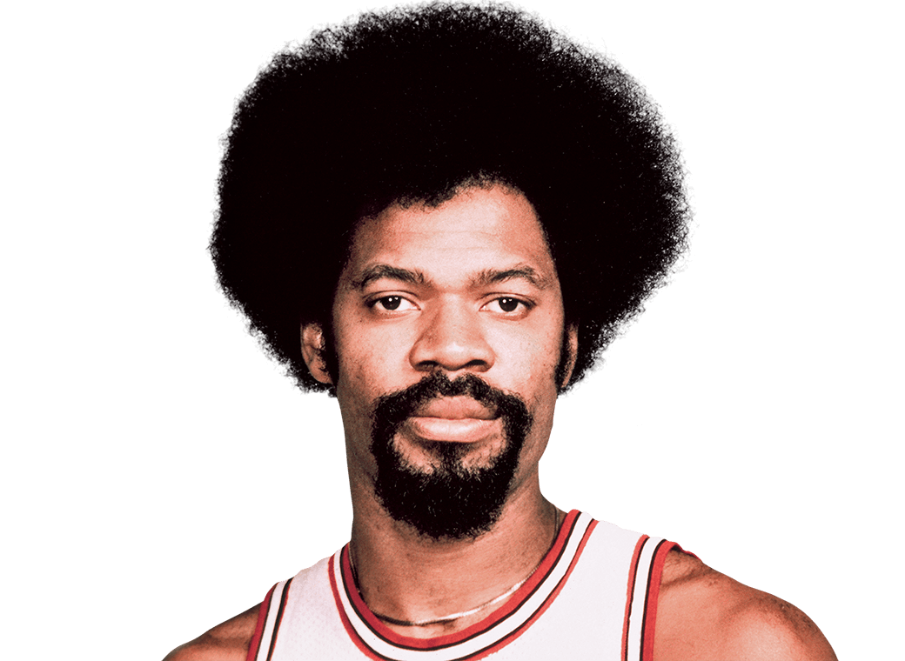

Measured (2013-14 on)
Estimated from minutes
1
Jordan1984-98
110-125marathons
~3,048 miles43,364 min- MPH
2
Pippen1987-2004
95-107marathons
~2,622 miles37,296 min- MPH
3
Hinrich2003-16
70-75marathons
~1,905 miles25,219 min- MPH
4
Deng2004-14
63-71marathons
~1,743 miles24,815 min- MPH
5
Grant1987-94
57-64marathons
~1,568 miles22,310 min- MPH
6
Noah2007-16
49-52marathons
~1,315 miles18,949 min- MPH
7
Paxson1985-94

46-52marathons
~1,268 miles18,043 min- MPH
8
Gilmore1976-88

44-49marathons
~1,205 miles17,150 min- MPH
9
Rose2008-16
42-44marathons
~1,128 miles15,875 min- MPH
10
Corzine1982-89

40-46marathons
~1,115 miles15,868 min- MPH
11
LaVine2017-25

41.7marathons
1,093 miles14,580 min4.30 MPH
12
Armstrong1989-2000
39-45marathons
~1,092 miles15,534 min- MPH
13
Greenwood1979-85

39-44marathons
~1,080 miles15,362 min- MPH
14
Theus1978-84

38-44marathons
~1,063 miles15,129 min- MPH
15
Kukoč1993-2000
38-43marathons
~1,049 miles14,928 min- MPH
255075100